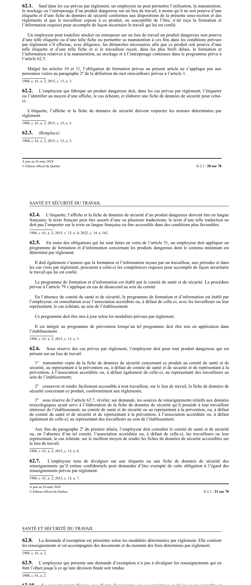

art-62.1-LSST : étiquette, fiche et formation obligatoires
Un article du wiki ⚖️ Recueil législatif
En bref
- Quatre gestes visés d'un coup : utilisation, manutention, stockage et entreposage d'un produit dangereux sur un lieu de travail.
- Deux conditions cumulatives avant d'en permettre un seul : le produit porte une étiquette et une fiche de données de sécurité conformes, et le travailleur exposé ou susceptible de l'être a reçu la formation et l'information requises pour travailler de façon sécuritaire.
- Exception encadrée pour le seul stockage, l'entreposage et la manutention à ces fins d'un produit non étiqueté : l'employeur doit agir avec diligence pour obtenir l'étiquette et la fiche, et le travailleur doit recevoir dans les plus brefs délais la formation du programme de l'art. 62.5.
- Malgré les art. 10 et 11, l'obligation de formation ne s'applique pas aux personnes visées au paragraphe 2° de la définition de « travailleur » de l'art. 1.
- Le tout sous réserve des cas prévus par règlement : la loi fixe le principe, le règlement fixe les modalités.
🌐 LegisQuébec · 📄 PDF officiel (page 20)
Texte officiel : capture du PDF
{kind=link}

Toucher l'image pour l'agrandir🔗 Ouvrir a cette page : LSST.pdf : page 20 · texte a jour au 26 mars 2024
Voir aussi
- art. 61 : diffusion programme prévention modifié · l'employeur transmet au comité de santé et de sécurité, à l'association accréditée, au représentant à la prévention, au médecin responsable et à l'association sectorielle une copie du programme de prévention tel que modifié suite à une ordonnance de la Commission.
- art. 62 : rapport événement grave Commission · obligation : l'employeur doit informer la Commission par le moyen le plus rapide et, dans les 24 heures, lui faire un rapport écrit de tout événement entraînant le décès d'un travailleur, une perte de membre, des blessures à plusieurs travailleurs ou des dommages matériels de 150 000 $.
- art. 62.2 : étiquetage des produits dangereux fabriqués · obligation : l'employeur qui fabrique un produit dangereux doit, dans les cas prévus par règlement, l'étiqueter ou l'identifier au moyen d'une affiche et élaborer une fiche de données de sécurité ; l'étiquette, l'affiche et la fiche doivent respecter les normes déterminées par règlement.
- art. 62.3 : disposition abrogée · disposition-abrogée.
- ↑ Loi : LSST
Pages qui pointent ici (9)
- 🎯 Démarrage rapide, conseiller SST Droit du travail
- 🎯 Démarrage rapide, direction et RH Droit du travail
- art-61-LSST : diffusion du programme de prévention modifié Recueil législatif
- art-62-LSST Sécurité industrielle
- art-62-LSST : avis et rapport d'événement grave Recueil législatif
- art-62.2-LSST : étiquetage des produits dangereux fabriqués Recueil législatif
- LSST : Chapitre IV : Programme de prévention Recueil législatif
- LSST, droits et obligations Droit du travail
- Obligations de l'employeur Droit du travail